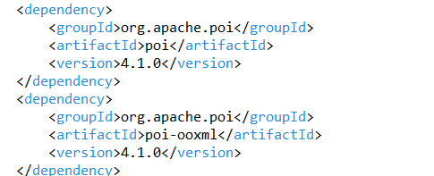
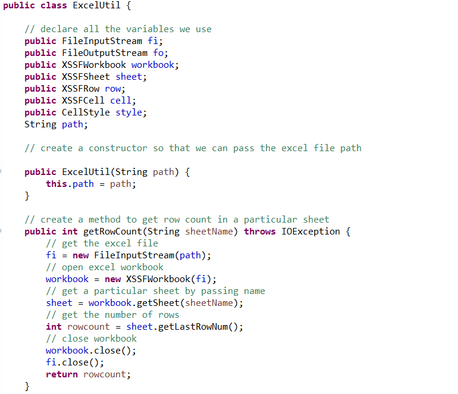
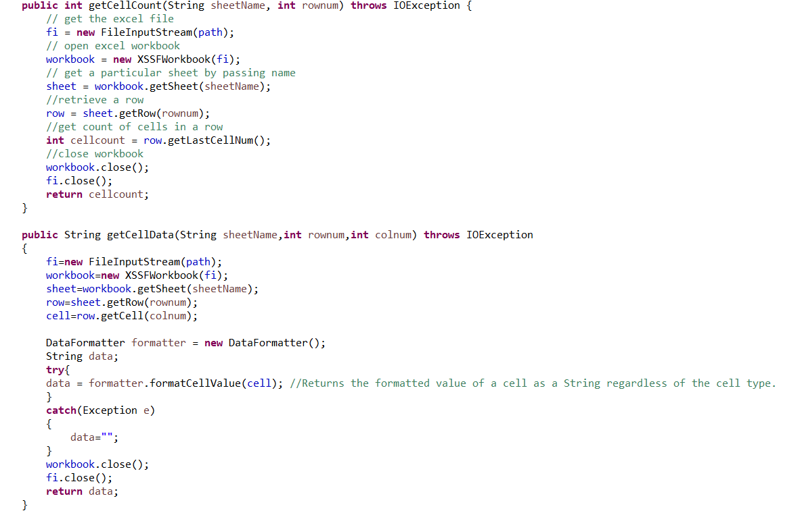
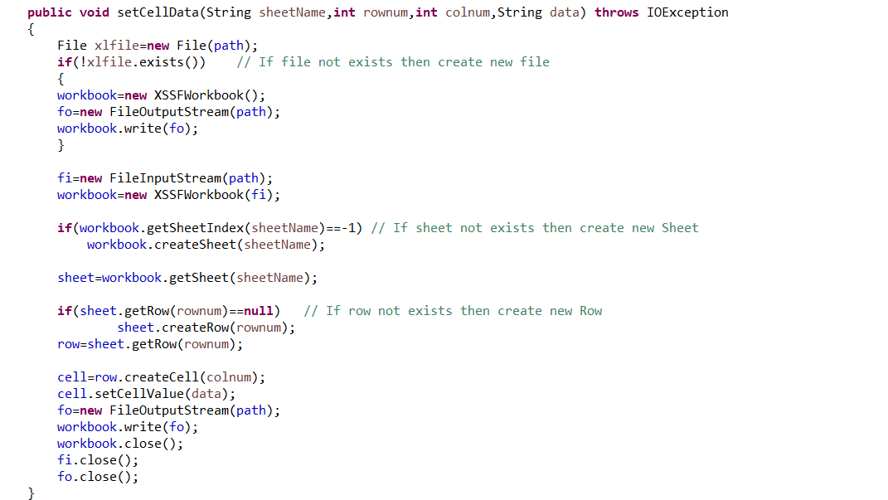
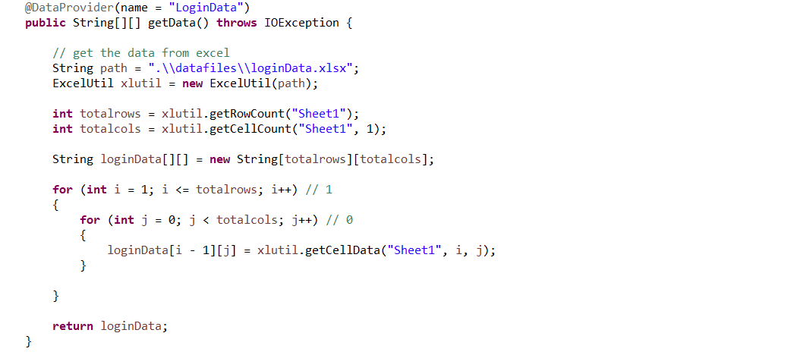
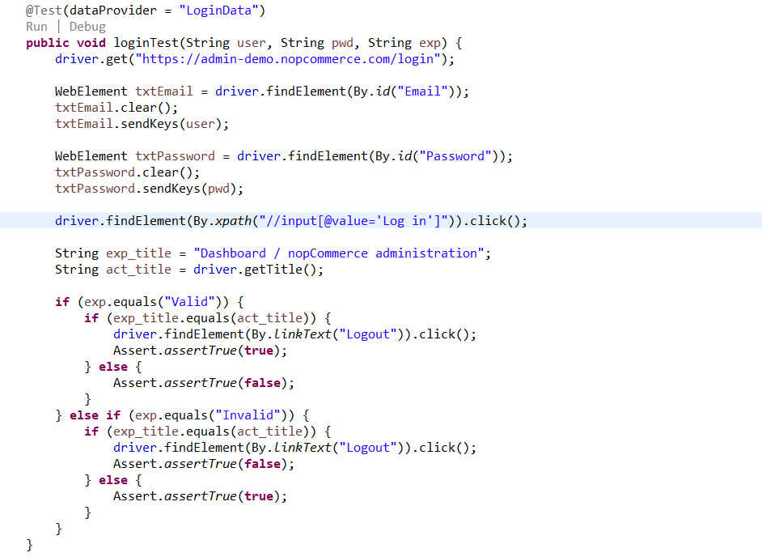

Lets understand a basic scenario how we can get data from excel and pass it to dataProvider and drive our testcase with multiple sets of data
We need Apache POI dependencies to work with excel , make sure both are of same version [poi , poi-ooxml]
To work with excel 4 classes we must keep in mind
We will create object of these classes to work with excel , as we have multiple testcases that needs data from excel ,its always better to have excel handling code in a utility class so it can be reused in all testcases
  In test class we can create dataprovider method to read data from excel file from a particular sheet and row
 